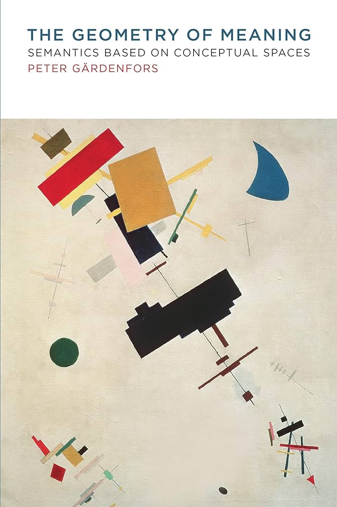
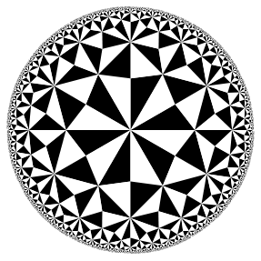
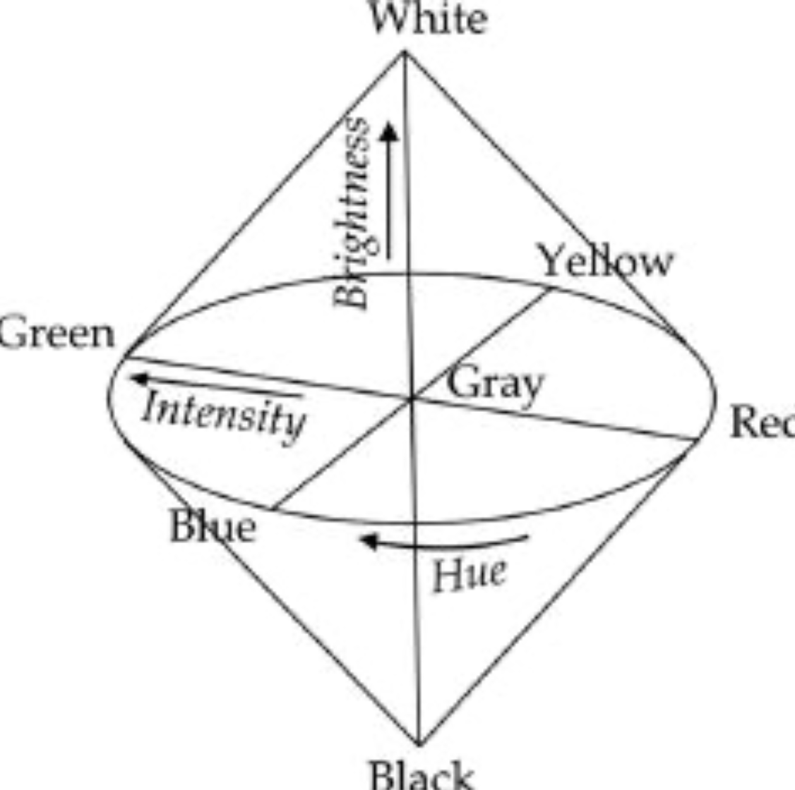
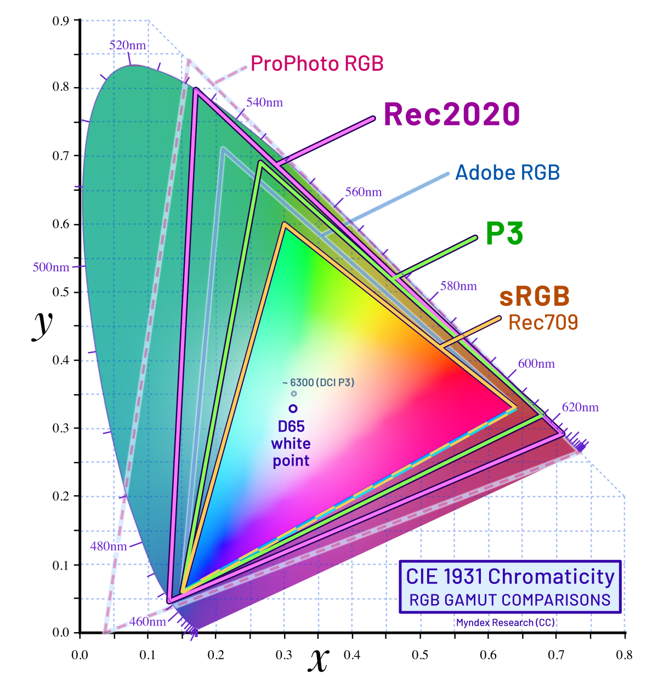
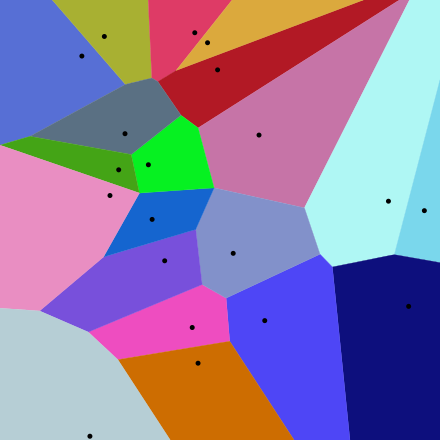

In this book, we will be covering the main points of the book. We will be drawing parallels between the cognitive interpretation and computational representation of language models. My aim here is to better understand representation learning in language models but from a cognitive science perspective.
1. Semantics as a meeting of minds
- “Langue (language as a social system of signs) and parole (the individual speech acts).”
- “The signs of language are “collective products of social interaction, essential instruments through which human beings constitute and articulate their world,”
- Language games as an act of communication.
- “philosophy of language, one can find two fundamentally different answers to the ontological question, one realistic and one cognitive”
- “ A special aspect of the semantic question is how meanings of composed expressions relate to the meanings of the constituents. ”
- Language learning is sample efficent. Humans learn about 10 words per day while growing up
- Grounding of language( spatial repesentation of words) among young people is not grounded in ambigious situations like adults but in simple use cases.
- “Early word learning often takes place in the context of infants’ active exploration of objects: infants do not simply look passively at the jumble of toys on the floor but rather use their body—head, hands, and eyes—to select and potentially visually isolate objects of interest, thereby reducing ambiguity at the sensory level.”
Semantic Theory basic foundations:
- The ontological criterion
- A theory of semantics shall explain what kind of entities meanings are.
- The semantic criterion:
- A theory of semantics shall account for the relation between communicative expressions and their meanings
- The epistemological criterion:
- A theory of semantics shall explain how the meanings of communicative acts can be learned”
- The social criterion:
- A semantic theory shall account for the relation between the meaning systems of individual speakers and their languages
- A semantic theory shall account for the relation between perceptual processes and meaning.
- A semantic theory shall account for the relation between actions and meaning.
Most of the analyses within cognitive linguistics concern relations between words and representations of concepts.
Every word, possibly except for syntactic markers, is supposed to correspond to an image schema
2. Conceptual Spaces
Very similar to representation learning in DL, Topology and geometry allow us to talk about nearness and distance in a space.
The cognitive interpretation concerns the structure of human perception and their inner worlds.
The scientific interpretation, on the other hand, deals with how different dimensions are presented within a scientific theory. These are different representations and need to be treated as such
Human communication
- Human communication involves not just an understanding of the meaning of a sign itself but an understanding that a sign can be used communicatively.
- The communicative sign function implies an understanding that the sign has the same meaning for the addressee as for the sender. But “having the same meaning” is a reflexive notion, and this implies at least some degree of third-order intersubjectivity
“a semantic theory based on meetings of minds will be presented. According to this view, the meanings of expressions do not reside in the world or (solely) in the image schemas of individual users but emerge from the communicative interactions of language users.” - Book
- There are two basic types of meetings of minds:
- Fast meeting
- minds concerns expressions that obtain their meaning during a communicative interaction
- Mom pointing to a toy and the child looking at the toy learns what lego is
- Popularly called joint attention (basically the same in transformers multi-attention mechanism)
- Slow meeting
- The slow concerns how a community adjusts its uses of words, gestures, and so on, so that they obtain relatively fixed meanings within the community that are largely independent of any particular communicative context.
- Language traditional widely agreed on. ofc gyat, is a counter example
- Fast meeting
The flaw which the author sees is:
“In my opinion, it is necessary to separate meaning relations that are based on similarity judgments from other types of relations. I suggest a narrower characterization of domain based on dimensionality and argue that many other aspects of meaning that have been sorted under the notion instead concern part-whole and other meronomic relations.”
AKA, partition space according to relational definitions only not to be recursively higher.
This can be explained as dimensional and meronomic difference. In smooth brain terms, representaion bad in hierarchical terms. Dimension flatness
We can fix representaion bad in hierarchical terms. These processes are tedious and as of march 2024, i have not seen any LM do this well. Some possible academic solutions include:
-
- Map embeddings to piocaré space. Top points neat the center, go down the tree, place away from the center. Use Riemannian optimization to optimize the embeddings.

Example of Poincare ball, all the subspaces are of same size
-
- Partition spaces into blocks.
- Add conditions for each member to be in the block.
- Add a subspace indicator function to model membership.
- Add vectors quantifies to what extent the i-th token vector belongs to the j-th token vector ( Basically self attention).
- Subspace with different degrees of precision one for spatial, once inside spatial, Voronoi space of it.
- This is my understanding of it, i frankly think this approach has major flaws especially related to handling positions and same word different meanings situation. Very confident this doesn’t scale
Metaphors and Metonymies
Metaphor (drawing a similarity between two things) and metonymy (drawing a contiguity between two things) are two fundamental opposite poles along which a discourse with human language is developed. These mappings are basicallys two poles:
- similarity and contiguity
- condensation and displacement
- paradigmatic and syntagmatic poles
It has been argued that the two poles of similarity and contiguity are fundamental ones along which the human mind is structured; in the study of human language the two poles have been called metaphor and metonymy, while in the study of the unconscious they have been called condensation and displacement. In linguistics, they are connected to the paradigmatic and syntagmatic poles - wiki
Current Language models are very sensitive to a metaphor’s novelty. GPT-4 doen’t have this ability fully.
The ability to generate interpretations of novel metaphors must not be confused with the ability to generate novel metaphors. Besides being able to generate interpretations of metaphors, as shown here, LLMs can certainly generate texts in which metaphors appear. However, to the best of our current knowledge, the metaphors an LLM might generate are limited to those that human writers have already formed and planted into texts, thereby making humanity’s store of metaphors available to be mined by LLMs -Nicholas,Dušan Stamenkovićb, Keith in Large Language Model Displays Emergent Ability to Interpret Novel Literary Metaphors
Support
Cognitive interpretation and computational representation example with color

> Cognitive representation of colour
> Computational representation of colourVoronoi diagram
In mathematics, a Voronoi diagram is a partition of a plane into regions(tessellation) close to each of a given set of objects. In the simplest case, these objects are just finitely many points in the plane. For each seed there is a corresponding region, called a Voronoi cell, consisting of all points of the plane closer to that seed than to any other.
Extensibly used in FAISS and other ANN search algorithms
Example of a varonoi diagram:

Computational representation of colour
The edjes are infinite lines here. Assume top left point is . Then the point are:
- is in the dark blue domain
- is in the light blue domain
- is in the grey domain
- is in the blue domain
A Voronoi tessellation depends on the level of specificity of the class of concepts represented by the tessellation. (Density of points)
Author argues humans do something same. We partition the world into regions of concepts.
Metonymy
Metonymy’s is a figure of speech in which the name of an object or concept is replaced with a word closely related to or suggested by the original
from sentence_transformers import SentenceTransformer
model = SentenceTransformer("all-mpnet-base-v2 ")
cosine_distance(model.encode(["crown","king"]))
0.482790470123291
cosine_distance(model.encode(["white house","president"]))
0.44765037298202515
Mainstream cognitive semantics does not provide a viable account of the social criterion. This boils down to LM’s inability to account for the social dimension of meaning, which is a crucial aspect of language use.